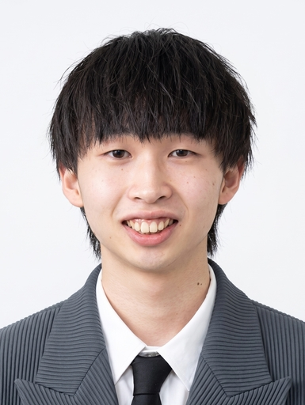

八木 颯斗
Hayato Yagi
慶應義塾大学大学院 理工学研究科
Graduate School of Science and Technology, Keio University
高道研究室 修士2年
Takamichi Lab, M.E. student (2nd year)
研究興味 (Research Interests)
- 基盤モデルの内部機序分析 (Internal Mechanism Analysis of Foundation Models)
- 音楽情報処理 (Music Information Processing)

News
-
2026.07
ISMIR 2026 に採択されました（採択率 31.2%）。
-
2026.06
Interspeech 2026 に採択されました。
-
2026.06
音学シンポジウム2026にて優秀発表賞を受賞しました。
-
2025.08
第144回研究会 音楽情報科学研究会（MUS研究会）にてベストプレゼンテーション賞（Best Research 部門）を受賞しました。
経歴 (Education)
-
2025.04 – Present
慶應義塾大学大学院 理工学研究科 開放環境科学専攻
Graduate School of Science and Technology, Keio University
修士課程 / 指導教員: 高道 慎之介
M.E. / Advisor: Shinnosuke Takamichi -
2021.04 – 2025.03
慶應義塾大学 理工学部 情報工学科
Faculty of Science and Technology, Keio University
学士 / 指導教員: 斎藤 博昭
B.E. / Advisor: Hiroaki Saito
受賞 (Awards)
-
2026.06
優秀発表賞, 音学シンポジウム2026, 「音声基盤モデルは人間と同様の知覚的話者類似性を持つのか？」
-
2026.03
学生奨励賞（Best New Direction 部門）, 情報処理学会 音楽情報科学研究会（MUS研究会） 第145回研究会, 「音楽基盤モデルの表現形成における学習過程の解析手法の検討」（共著）
-
2025.08
ベストプレゼンテーション賞（Best Research 部門）, 第144回研究会 音楽情報科学研究会（MUS研究会）（夏のシンポジウム）, 「音楽基盤モデルは音高情報を螺旋構造に埋め込むか？」
論文リスト (Publications)
一致する論文がありません。
国際会議 (International Conferences)
主著 (First Author)
-
Hayato Yagi, Shinnosuke Takamichi, Rin Sato, Keitaro Tanaka, and Shigeo Morishima, “Do Music Foundation Models Embed Pitch in Helical Structure?,” Proc. ISMIR, Nov. 2026.
-
Minoru Kishi†, Hayato Yagi†, Shinnosuke Takamichi, and Yuki Saito, “Do speech foundation models perceive speaker similarity as humans do?,” Proc. Interspeech, Sep. 2026. †co-first author
国内会議 (Domestic Conferences)
主著 (First Author)
-
岸 秀†, 八木 颯斗†, 高道 慎之介, 齋藤 佑樹, 「音声基盤モデルは人間と同様の知覚的話者類似性を持つのか？」, 情報処理学会 音学シンポジウム, Jun. 2026. †co-first author 優秀発表賞
-
八木 颯斗, 稲垣 賢斗, 高島 悠樹, 安藤 厚志, 高道 慎之介, 「Full-duplex音声対話モデルにおける性別表現のプロービング」, 音声・音響・信号処理ワークショップ（SPEASIP）, Mar. 2026.
-
八木 颯斗, 高道 慎之介, 佐藤 りん, 田中 啓太郎, 森島 繁生, 「音楽基盤モデルにおける音響特徴と内在音高螺旋の関係」, 情報処理学会 音楽情報科学研究会（MUS研究会）, Mar. 2026.
-
八木 颯斗, 高道 慎之介, 「音楽基盤モデルは音高情報を螺旋構造に埋め込むか？」, 情報処理学会 音楽情報科学研究会（MUS研究会）, Aug. 2025. ベストプレゼンテーション賞（Best Research 部門）
-
八木 颯斗, 斎藤 博昭, 「MIDI-likeトークンを用いたseq2seqモデルによる鼻歌自動採譜」, 情報処理学会 音学シンポジウム, Jun. 2025.
共著 (Co-author)
-
佐藤 りん, 田中 啓太郎, 八木 颯斗, 高道 慎之介, 森島 繁生, 「音楽基盤モデルの学習過程における内在音高螺旋の可視化」, 情報処理学会 音学シンポジウム, Jun. 2026.
-
佐藤 りん, 田中 啓太郎, 八木 颯斗, 高道 慎之介, 森島 繁生, 「音楽基盤モデルの表現形成における学習過程の解析手法の検討」, 情報処理学会 音楽情報科学研究会（MUS研究会）, Mar. 2026.
学生奨励賞（Best New Direction 部門）
インターンシップ (Internship)
-
2025.08 – 2025.09
NTT R&D 人間情報研究所
NTT R&D, Human Informatics Laboratories
連絡先 (Contact)
- Email hayatobuti523[at]keio.jp
- GitHub haya0005
- X @yagiyagi__3
- Lab Takamichi Lab.